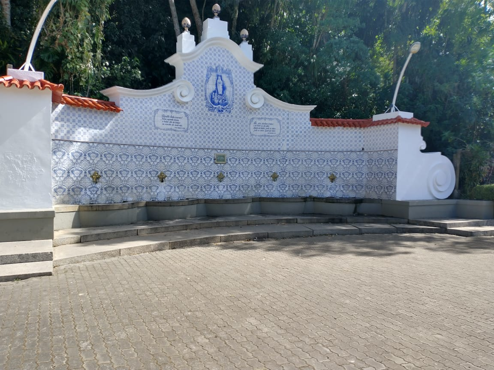
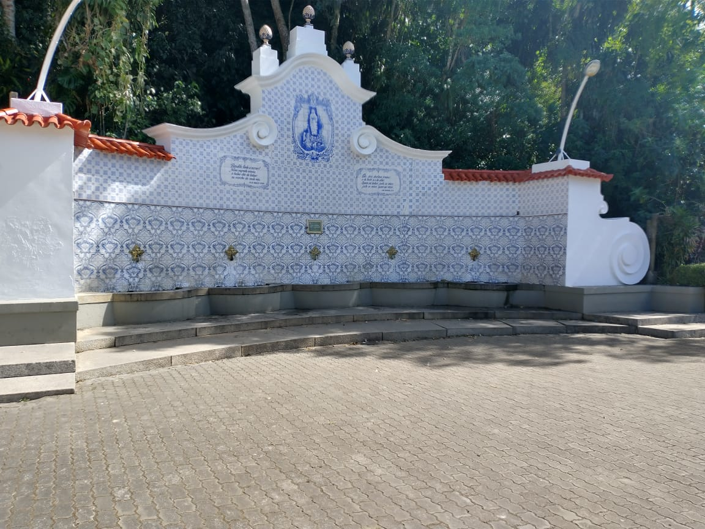

Aqui você encontra o local perfeito para se refrescar,
ele fica localizado perto do parque nacional da serra dos orgãos
e também bem proximo a feira de artes.
Em uma viajem em família, por que não parar para se hidratar com uma água natural
vinda direto das montanhas?
e ainda estar tão perto de outros pontos turísticos!